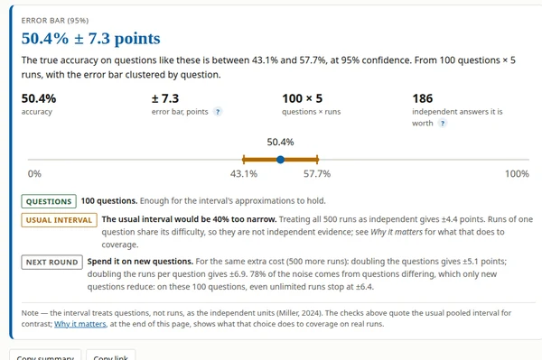
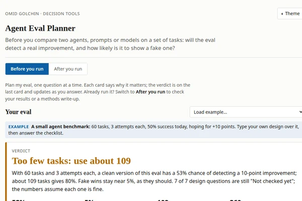
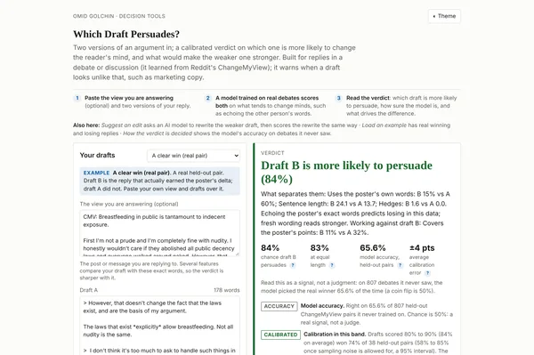
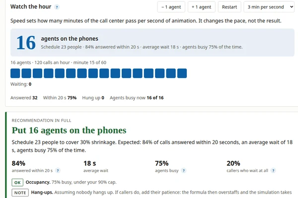

I build tools that make classic decision and simulation methods easy to use, and I study how far LLM and agent outputs can be trusted: how repeatable, how well calibrated, how reliable.
Mechanical engineer and MBA, applying for PhD research in AI for engineering, operations and decisions.
Tools
Each tool runs in your browser. The optional AI fill sends your text only to the language-model provider whose key you enter.
Evaluating LLMs and agents


Decisions under uncertainty


Operations and simulation



Research
Interests: LLM agents for engineering and data-analysis work; adapting general-purpose language models to specialised technical domains; AI for engineering, operations and decisions, including simulation and decision-making under uncertainty.
In progress: Do Language Models Overshoot When a Correction Gives a Direction but No Target? Study designed; preregistration and pilot, November 2026.
About
BS in Mechanical Engineering from the University of Tehran, and an MBA (Marketing) from Sharif University of Technology. I led AI product work at an AI-product startup studio, working with data-science and engineering teams on bringing language models into business processes. Earlier, I worked in startup investment analysis at a venture firm, in market research, and ran e-commerce businesses. My arc: an engineer and operator who came to data and AI through real business and product problems, then built the technical foundation for graduate research.